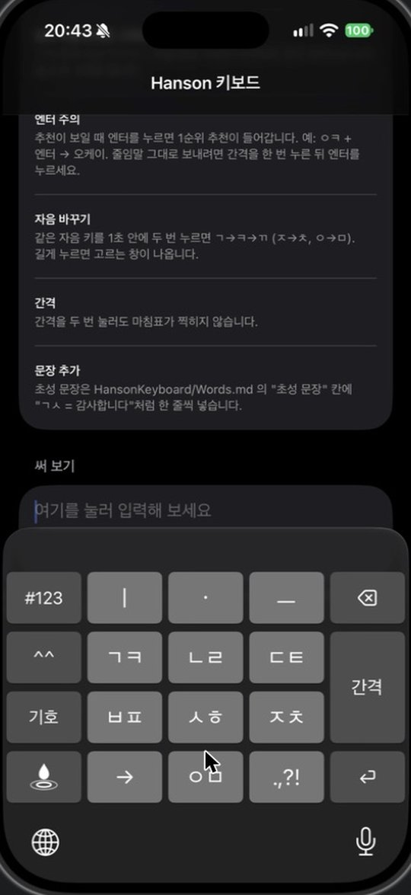
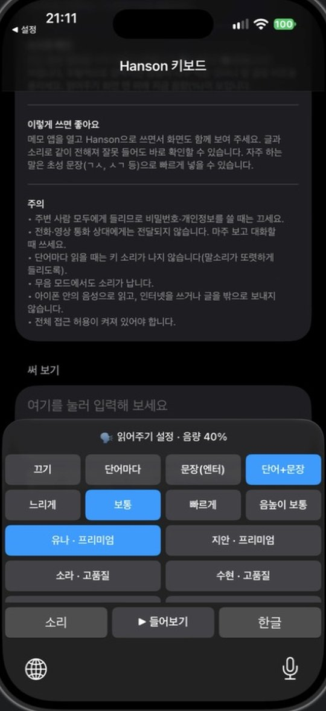
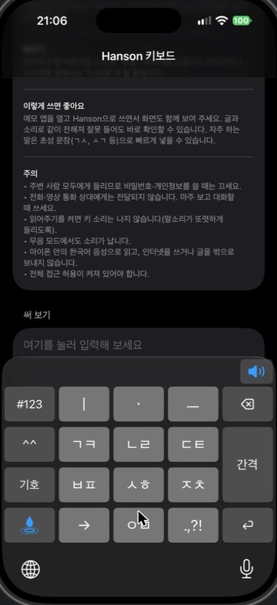
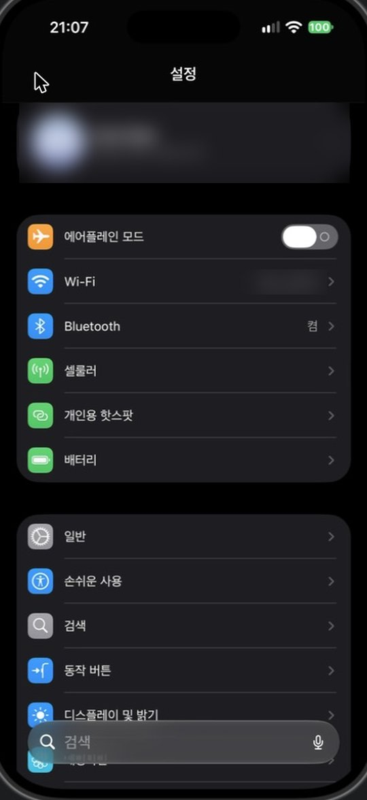
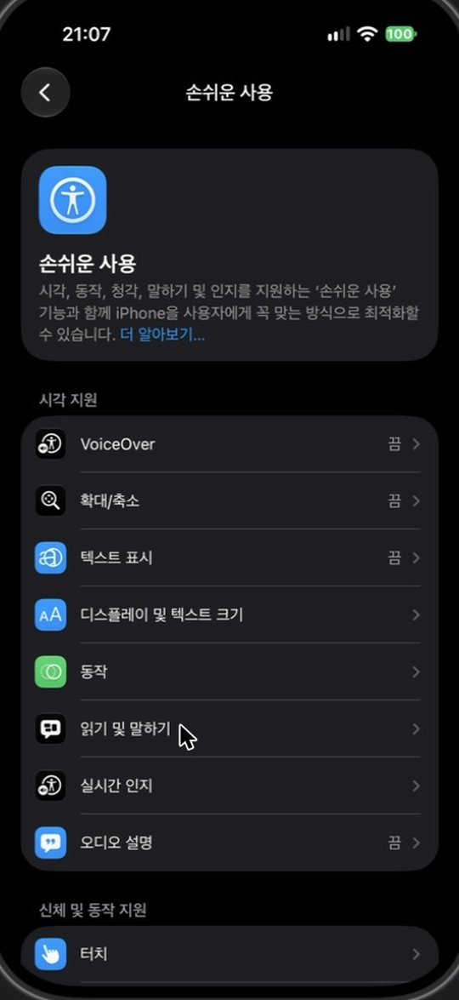
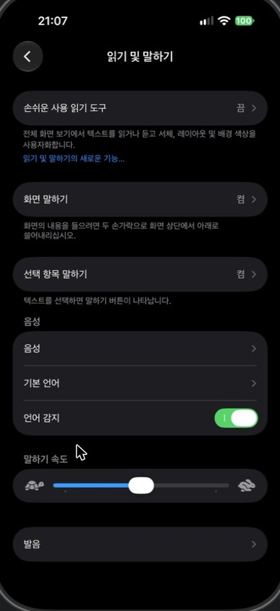
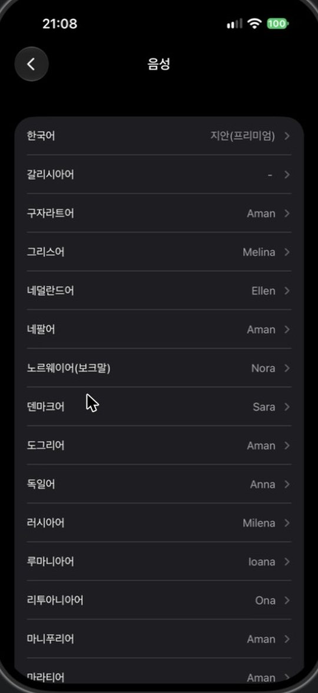
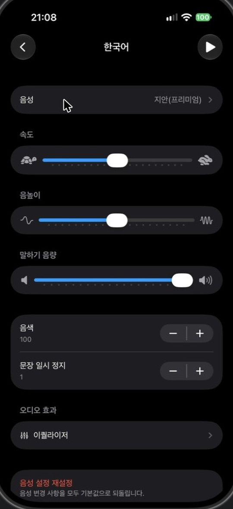
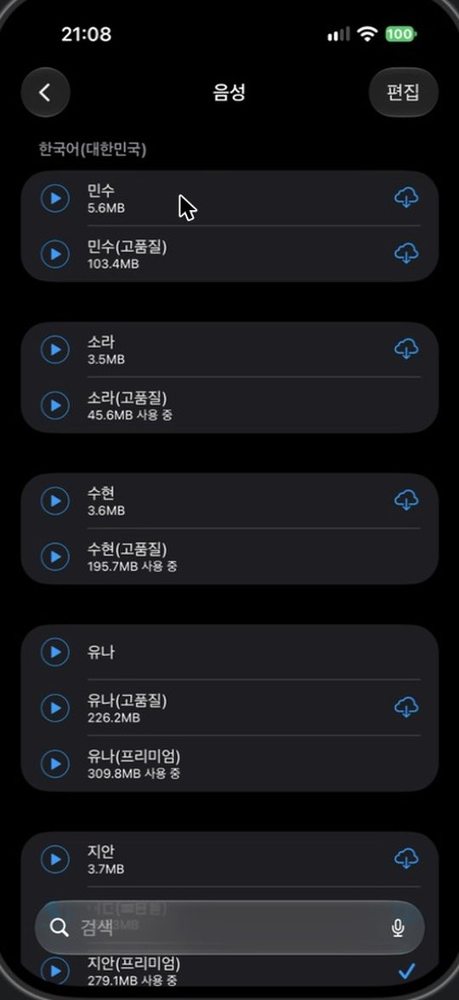

한손 - 천지인 키보드
1. 처음 설치하면: 키보드 켜기
앱을 설치한 뒤 아이폰 설정에서 키보드를 한 번 추가해야 합니다.
- 설정 앱 → 일반 → 키보드 → 키보드
- 새로운 키보드 추가 → 한손을 누릅니다.
- (선택) 목록에서 한손 → 전체 접근 허용을 켭니다. 키 소리·진동·읽어주기에 필요합니다. 켜지 않아도 글자 입력은 됩니다.
- 메모 앱 등 글을 쓰는 곳에서 화면 아래 🌐(지구본)을 눌러 한손으로 바꿉니다.
팁: 키보드 목록을 한손 + 영어 두 개만 두면 🌐 한 번으로 한글·영어가 바뀝니다. 다른 키보드는 🌐을 길게 눌러 고를 수 있습니다.
2. 자판 쓰는 법
ㅣ ㆍ ㅡ
ㄱㅋ ㄴㄹ ㄷㅌ
ㅂㅍ ㅅㅎ ㅈㅊ
→ ㅇㅁ .,?!
- 모음: ㅣ, ㆍ, ㅡ 세 개를 이어 눌러 만듭니다. 예) ㅣ+ㆍ = ㅏ, ㆍ+ㅡ = ㅗ
- 자음 바꾸기: 같은 키를 1초 안에 연달아 누르면 ㄱ → ㅋ → ㄲ 로 바뀝니다(ㅈ 두 번 = ㅊ, ㅇ 두 번 = ㅁ).
- 같은 자음 이어 쓰기: 1초가 지난 뒤 누르면 다음 칸에 새 글자가 들어갑니다(ㅋㅋㅋ). 길게 누르면 ㄱ/ㅋ/ㄲ 선택창이 나옵니다.
- 빨리 쳐도 오타 없음: "안녕", "학교", "엄마"처럼 받침과 다음 첫소리가 같은 키여도, 실제 쓰는 낱말을 골라 바르게 입력합니다.
- 간격: 두 번 눌러도 마침표가 찍히지 않습니다.
- 추천 줄: 자판 위 3칸에 쓰던 말로 시작하는 낱말·문장이 나옵니다. 누르거나, 엔터를 누르면 1순위(파란 글씨)가 들어갑니다. 많이 쓴 말이 앞에 나옵니다.
- 초성 입력: 자음만 쳐도(ㄱㅅ) 문장(감사합니다)을 추천합니다.
- 왼쪽 열: #123(숫자) / ^^(표정) / 기호 / 물방울(키 소리·읽어주기)

3. 키 소리 고르기
- 왼쪽 맨 아래 물방울 키를 누릅니다.
- 소리를 누르면 바로 들려주고 그 소리로 바뀝니다. 파란 테두리가 지금 쓰는 소리입니다.
- 한글을 누르면 자판으로 돌아갑니다.
4. 읽어주기
쓴 글을 아이폰 음성으로 읽어 줍니다. 인터넷을 쓰지 않습니다.


5. 고품질 음성 받기 (선택)
아이폰의 고품질·프리미엄 한국어 음성을 받으면 더 자연스럽게 읽습니다. 와이파이에서 받으세요(약 45~310MB).






자주 묻는 질문
키 소리나 진동이 나지 않아요.
전체 접근 허용이 켜져 있어야 합니다. 물방울 키에서 "끄기"가 선택되어 있지 않은지도 확인해 주세요.
읽어주기 소리가 작거나 들리지 않아요.
아이폰 옆 음량 버튼으로 올려 주세요. 읽어주기는 전체 접근 허용이 필요합니다.
비밀번호 칸에서는 한손이 나오지 않아요.
iOS는 보안을 위해 비밀번호 입력 칸에서 기본 키보드만 사용합니다. 정상 동작입니다.
영어로 쓰고 싶어요.
화면 아래 🌐 버튼으로 영어 키보드로 바꿉니다.
추천 기록을 지우고 싶어요.
추천 기록은 아이폰 안에만 저장됩니다. 앱을 삭제하면 모두 지워집니다.
입력한 글이 어디로 전송되나요?
전송되지 않습니다. 한손은 인터넷을 사용하지 않습니다. 자세한 내용은 개인정보 처리방침을 참고해 주세요.
문의
사용 중 문제나 제안은 이메일로 보내 주세요.
nomin1fi@gmail.com